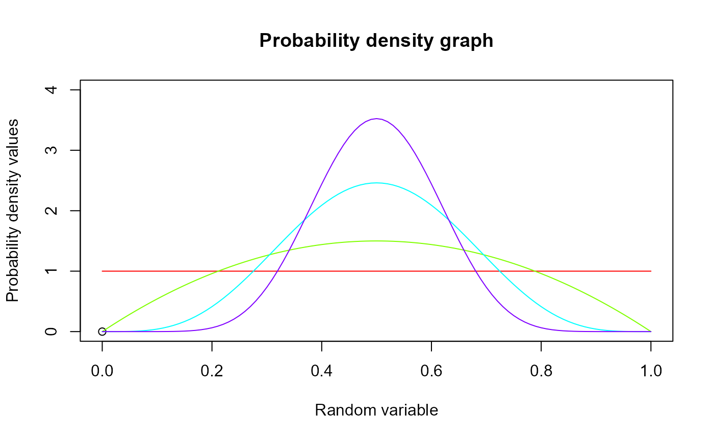
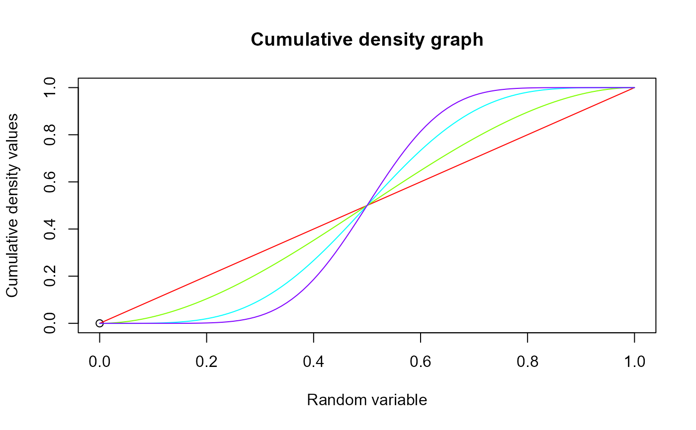

These functions provide the ability for generating probability density values, cumulative probability density values and moment about zero values for the Beta Distribution bounded between [0,1].
Arguments
- r
vector of moments.
- a
single value for shape parameter alpha representing as a.
- b
single value for shape parameter beta representing as b.
Details
The probability density function and cumulative density function of a unit bounded beta distribution with random variable P are given by
$$g_{P}(p)= \frac{p^{a-1}(1-p)^{b-1}}{B(a,b)} $$ ; \(0 \le p \le 1\) $$G_{P}(p)= \frac{B_p(a,b)}{B(a,b)} $$ ; \(0 \le p \le 1\) $$a,b > 0$$
The mean and the variance are denoted by $$E[P]= \frac{a}{a+b} $$ $$var[P]= \frac{ab}{(a+b)^2(a+b+1)} $$
The moments about zero is denoted as $$E[P^r]= \prod_{i=0}^{r-1} (\frac{a+i}{a+b+i}) $$ \(r = 1,2,3,...\)
Defined as \(B_p(a,b)=\int^p_0 t^{a-1} (1-t)^{b-1}\,dt\) is incomplete beta integrals and \(B(a,b)\) is the beta function.
NOTE : If input parameters are not in given domain conditions necessary error messages will be provided to go further.
References
Johnson NL, Kotz S, Balakrishnan N (1995). Continuous univariate distributions, volume 2, volume 289. John wiley and sons. Trenkler G (1996). “Continuous univariate distributions.” Computational Statistics and Data Analysis, 21(1), 119--119.
Examples
#plotting the random variables and probability values
col <- rainbow(4)
a <- c(1,2,5,10)
plot(0,0,main="Probability density graph",xlab="Random variable",ylab="Probability density values",
xlim = c(0,1),ylim = c(0,4))
for (i in 1:4)
{
lines(seq(0,1,by=0.01),dBETA(seq(0,1,by=0.01),a[i],a[i])$pdf,col = col[i])
}

dBETA(seq(0,1,by=0.01),2,3)$pdf #extracting the pdf values
#> [1] 0.000000 0.117612 0.230496 0.338724 0.442368 0.541500 0.636192 0.726516
#> [9] 0.812544 0.894348 0.972000 1.045572 1.115136 1.180764 1.242528 1.300500
#> [17] 1.354752 1.405356 1.452384 1.495908 1.536000 1.572732 1.606176 1.636404
#> [25] 1.663488 1.687500 1.708512 1.726596 1.741824 1.754268 1.764000 1.771092
#> [33] 1.775616 1.777644 1.777248 1.774500 1.769472 1.762236 1.752864 1.741428
#> [41] 1.728000 1.712652 1.695456 1.676484 1.655808 1.633500 1.609632 1.584276
#> [49] 1.557504 1.529388 1.500000 1.469412 1.437696 1.404924 1.371168 1.336500
#> [57] 1.300992 1.264716 1.227744 1.190148 1.152000 1.113372 1.074336 1.034964
#> [65] 0.995328 0.955500 0.915552 0.875556 0.835584 0.795708 0.756000 0.716532
#> [73] 0.677376 0.638604 0.600288 0.562500 0.525312 0.488796 0.453024 0.418068
#> [81] 0.384000 0.350892 0.318816 0.287844 0.258048 0.229500 0.202272 0.176436
#> [89] 0.152064 0.129228 0.108000 0.088452 0.070656 0.054684 0.040608 0.028500
#> [97] 0.018432 0.010476 0.004704 0.001188 0.000000
dBETA(seq(0,1,by=0.01),2,3)$mean #extracting the mean
#> [1] 0.4
dBETA(seq(0,1,by=0.01),2,3)$var #extracting the variance
#> [1] 0.04
#plotting the random variables and cumulative probability values
col <- rainbow(4)
a <- c(1,2,5,10)
plot(0,0,main="Cumulative density graph",xlab="Random variable",ylab="Cumulative density values",
xlim = c(0,1),ylim = c(0,1))
for (i in 1:4)
{
lines(seq(0,1,by=0.01),pBETA(seq(0,1,by=0.01),a[i],a[i]),col = col[i])
}

pBETA(seq(0,1,by=0.01),2,3) #acquiring the cumulative probability values
#> [1] 0.00000000 0.00059203 0.00233648 0.00518643 0.00909568 0.01401875
#> [7] 0.01991088 0.02672803 0.03442688 0.04296483 0.05230000 0.06239123
#> [13] 0.07319808 0.08468083 0.09680048 0.10951875 0.12279808 0.13660163
#> [19] 0.15089328 0.16563763 0.18080000 0.19634643 0.21224368 0.22845923
#> [25] 0.24496128 0.26171875 0.27870128 0.29587923 0.31322368 0.33070643
#> [31] 0.34830000 0.36597763 0.38371328 0.40148163 0.41925808 0.43701875
#> [37] 0.45474048 0.47240083 0.48997808 0.50745123 0.52480000 0.54200483
#> [43] 0.55904688 0.57590803 0.59257088 0.60901875 0.62523568 0.64120643
#> [49] 0.65691648 0.67235203 0.68750000 0.70234803 0.71688448 0.73109843
#> [55] 0.74497968 0.75851875 0.77170688 0.78453603 0.79699888 0.80908883
#> [61] 0.82080000 0.83212723 0.84306608 0.85361283 0.86376448 0.87351875
#> [67] 0.88287408 0.89182963 0.90038528 0.90854163 0.91630000 0.92366243
#> [73] 0.93063168 0.93721123 0.94340528 0.94921875 0.95465728 0.95972723
#> [79] 0.96443568 0.96879043 0.97280000 0.97647363 0.97982128 0.98285363
#> [85] 0.98558208 0.98801875 0.99017648 0.99206883 0.99371008 0.99511523
#> [91] 0.99630000 0.99728083 0.99807488 0.99870003 0.99917488 0.99951875
#> [97] 0.99975168 0.99989443 0.99996848 0.99999603 1.00000000
mazBETA(1.4,3,2) #acquiring the moment about zero values
#> [1] 0.6
mazBETA(2,3,2)-mazBETA(1,3,2)^2 #acquiring the variance for a=3,b=2
#> [1] 0.04
#only the integer value of moments is taken here because moments cannot be decimal
mazBETA(1.9,5.5,6)
#> [1] 0.4782609